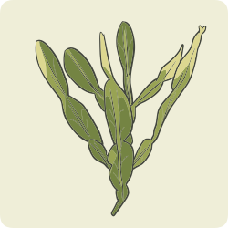

São plantas medicinais ricas em fibras alimentares e outras substâncias que não são absorvidas e que
adsorvem água, lipídios e glicídios na luz intestinal, retardando ou reduzindo sua absorção. Podem ser
utilizadas em pacientes com obesidade associada à hiperfagia, dislipidemia e constipação.
Essas plantas costumam atuar nos marcadores de glicemia e lipidemia, sendo uma ótima opção para pacientes
com síndrome metabólica. Exemplos de plantas medicinais com ação redutora de absorção.
Plantago psyllium (Plantaginaceae)
(psilium)

Baccharis trimera (Asteraceae)
(carqueja)
Taraxacum officinale (Asteraceae)
(dente-de-leão)